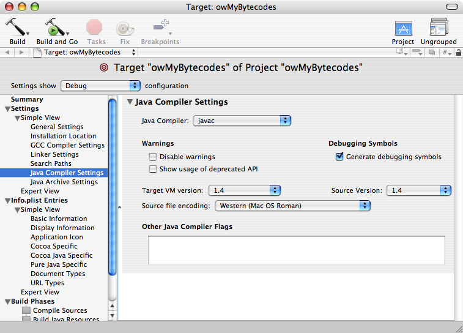

| ADC Home > Reference Library > Technical Q&As > Java > Tools > | |
|
Q: After installing J2SE 5.0 Release 4, my Java projects no longer build and run properly. What happened?A: J2SE 5.0 (JDK 1.5) becomes the "default" command-line JDK on Mac OS X as of J2SE 5 Release 4. This includes the Even with J2SE 5.0 Release 4 installed, a bundled Java application still runs under Java 1.4 if the following conditions are met:
Script- or command-line-based projects may also run into this problem if explicitly running the 1.4 Listing 1: Exception thrown when loading 1.5 bytecode in 1.4 or earlier. Exception in thread "main" java.lang.UnsupportedClassVersionError: lol (Unsupported major.minor version 49.0)
at java.lang.ClassLoader.defineClass0(Native Method)
at java.lang.ClassLoader.defineClass(ClassLoader.java:539)
at java.security.SecureClassLoader.defineClass(SecureClassLoader.java:123)
at java.net.URLClassLoader.defineClass(URLClassLoader.java:251)
at java.net.URLClassLoader.access$100(URLClassLoader.java:55)
at java.net.URLClassLoader$1.run(URLClassLoader.java:194)
at java.security.AccessController.doPrivileged(Native Method)
at java.net.URLClassLoader.findClass(URLClassLoader.java:187)
at java.lang.ClassLoader.loadClass(ClassLoader.java:289)
at sun.misc.Launcher$AppClassLoader.loadClass(Launcher.java:274)
at java.lang.ClassLoader.loadClass(ClassLoader.java:235)
at java.lang.ClassLoader.loadClassInternal(ClassLoader.java:302)
at java.lang.Class.forName0(Native Method)
at java.lang.Class.forName(Class.java:219)
at apple.launcher.LaunchRunner.loadMainMethod(LaunchRunner.java:55)
at apple.launcher.LaunchRunner.run(LaunchRunner.java:84)
at apple.launcher.LaunchRunner.callMain(LaunchRunner.java:50)
at apple.launcher.JavaApplicationLauncher.launch(JavaApplicationLauncher.java:52)
The solution is to tell the compiler that you want to create bytecode compatible with earlier versions of Java. Within Xcode, this is done in the Java Compiler Settings section of your Java target, as illustrated in Figure 1. If you have this problem, the Target VM version and Source version dropdowns will initially be set to "Unspecified", which makes Figure 1: Modifying Java Compiler Settings in Xcode.  Command-line builds do this using the javac -source 1.4 -target 1.4 owMyBytecodes.java If your application is using JDK 1.5 APIs, then it obviously requires 1.5 and a 1.4- or 1.3-based Document Revision History
Posted: 2006-04-14 |
|